jQuery源码分析————数据缓存
原理
内存泄漏
内存泄露是指一块被分配的内存既不能使用，又不能回收，直到浏览器进程结束（浏览器采用自动垃圾回收方法管理内存）。内存泄露的几种情况：
循环引用。
Javascript 闭包。
DOM 插入顺序。
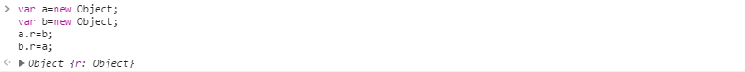
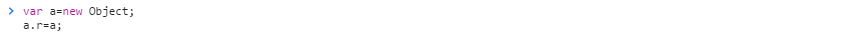
循环引用通常没有什么问题。但当参与循环引用的对象中有 DOM 对象或者 ActiveX 对象时，循环引用将导致内存泄露。即，从 DOM 中 remove 元素，但是依然有变量或者对象引用了该 DOM 对象，内存中无法删除。当直接扩展 DOM 元素的属性或添加过多数据就很容易引起内存泄漏。因此，需要使用一种低耦合的方式让 DOM 和缓存数据能够联系起来。
jQuery 缓存系统
jQuery 缓存系统是把所有数据保存在全局缓存对象\$.cache 中。jQuery 动画、事件等都是有这个缓存系统，以避免内存泄漏风险。
每个使用缓存系统的 DOM 对象会分配一个随机数 jQuery.expando 作为属性，属性值为自增 UUID，通过这个 UUID 关联文档对象和全局缓存对象\$.cache。
给 DOM 对象添加属性（非 attr 属性）是看不见的。
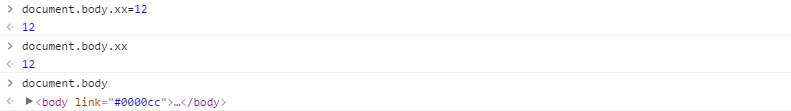
jQuery 缓存系统任何情况下都没有将数据保存到 DOM 对象的属性中，包括 dataAttr 方法，只是在缓存系统中找不到数据时，从 data-属性中读取数据，从来没有保存数据到。
源码
结构
- 首先定义内部方法。
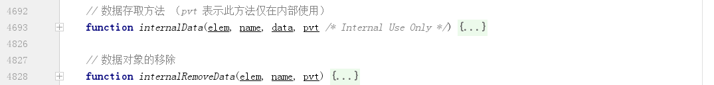
- 然后扩展静态方法。
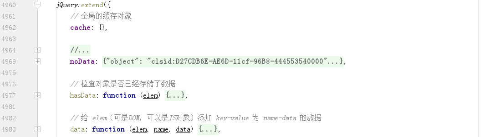
- 然后定义原型方法。
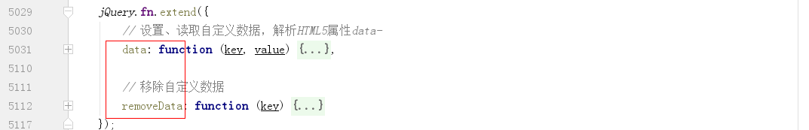
实现
保存数据
静态方法 data/_data
定义全局缓存对象 cache。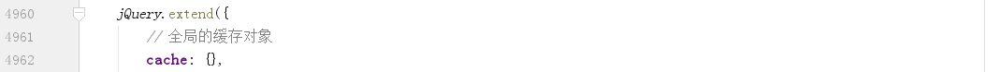
其中，cache 中的数据结构为：
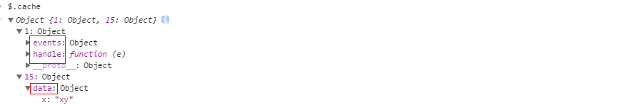
即，（1）cache 对象的 key 为整型值，从 1（guid，会和 dom 属性对应）开始递增。（2）jquery 内部数据直接是每个 key 指向的对象中的 key-value，而用户自定义数据则全部保存在单独的 1 个 data 对象中。
定义静态方法 data/_data，两者都是调用内部方法 internalData，区别在于_data 用于添加或读取一个仅供内部使用的数据。
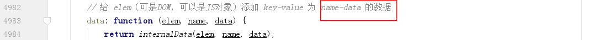

如果 elem 是 node，必须是 Element（1）或 Document（9），并且不能是 applet、embed 和 object 元素（因为他们不支持不支持设置 expando 属性）。
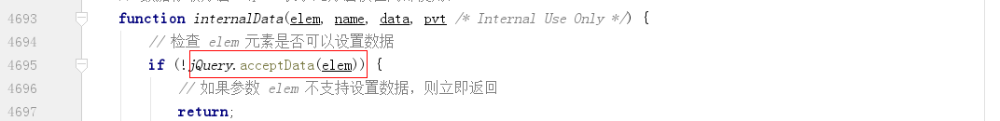

生成随机数字 jQuery.expando。
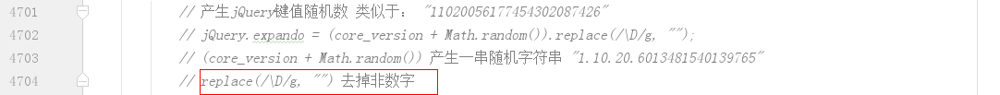
如果是 DOM 元素，保存在 cache 中。如果是 JS 对象，则直接将数据保存在这个对象上。
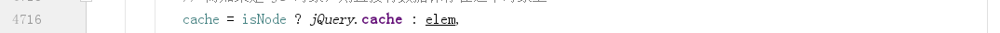
生成 id，如果已存在就用之前的，否则新生成 1 个（dom 从 1 自增，js 对象直接用 internalKey）。
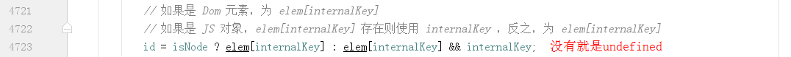
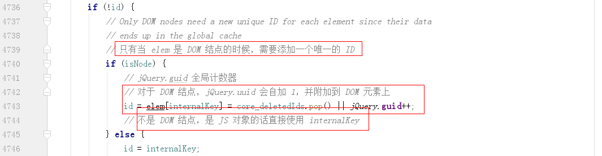
生成对应的 cache[id]。
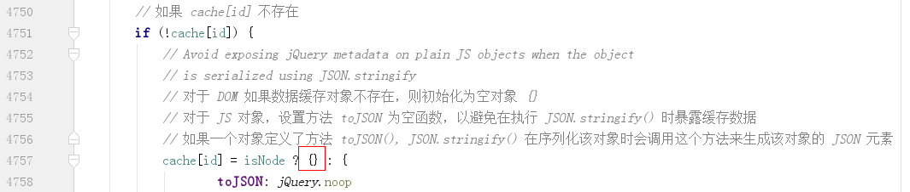
保存数据（pvt 代表内部数据）。
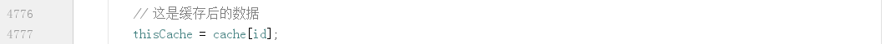
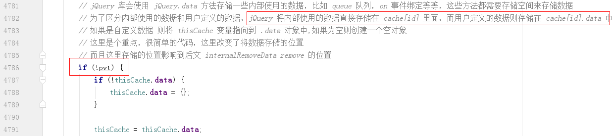
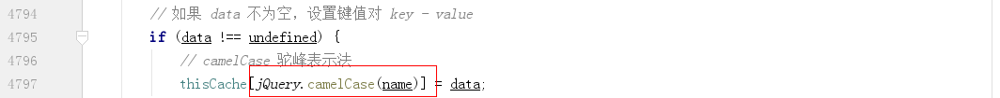
读取数据。
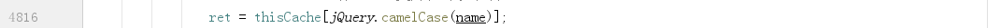
原型方法 jQuery.fn.data
定义 dataAttr，用来解析 elem 元素身上的 html 标签”data-“的值，如果传入的第 3 个参数 data 对象有值的话,则直接返回不进行解析。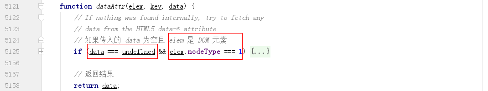

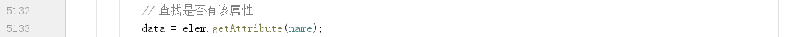
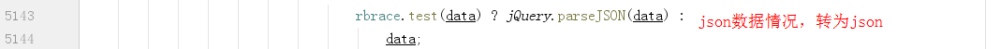
如果传给 data 的没有 key，如\$(divElement).data()情况，调用方法 jQuery.data(elem,name,data)获取第一个匹配元素关联的自定义数据缓存对象，并返回整个缓存对象。
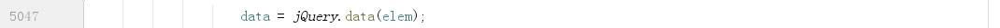
如果传给 data 的是 1 个对象，遍历对象，分别获取 key 对应的 value 返回。
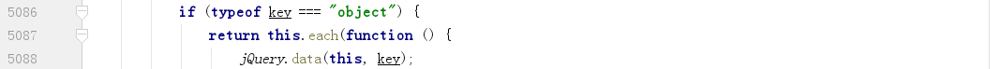
如果是保存，调用 jQuery.data 保存。
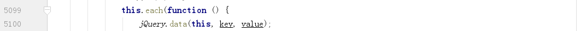
如果是获取 key，如果是 elem，则先从 Query.data 获取，如果没有数据再从 data-属性中获取。
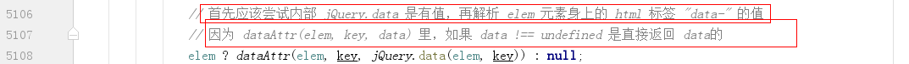
移除数据
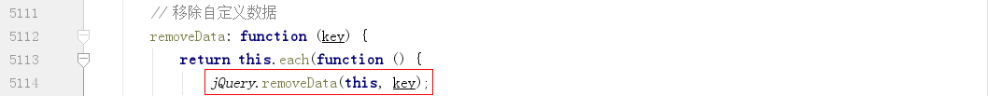
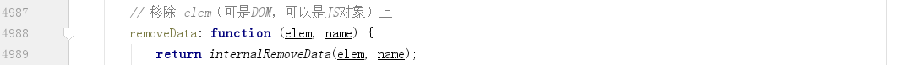
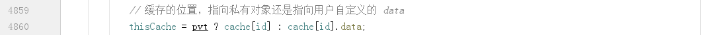
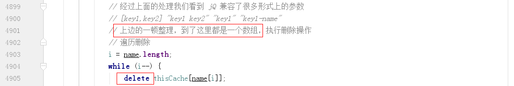